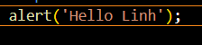
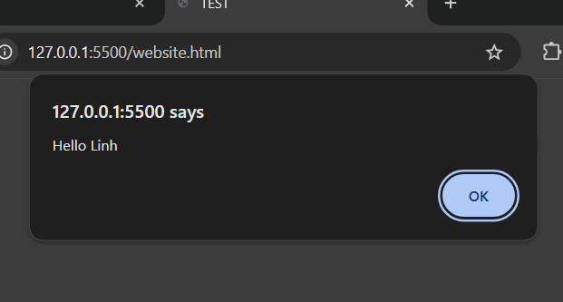

-JavaScript là một công nghệ sử dụng để tạo ra các website.
-3 công nghệ được sử dụng: HTML,CSS,JavaScript.
-Syntax: là những quy tắc mà chúng ta có để tuân theo khi sử dụng một chương trình ngôn ngữ như JavaScript.
-Các lệnh cơ bản:
+alert('...'); Tạo một của sổ hiển thị văn bảng giữa trang, có thể thay đổi nội dung văn bản. Ví du:

